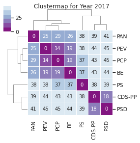
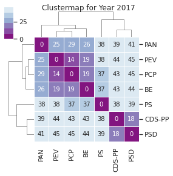

Votos do Chega¶
A verdade tem limites. O erro nenhum: a cair, a cair:
Anos e anos, e eras e eras
Continuou a cair pelo vazio, e sempre mais vazio
Para continuar a cair dia & noite sem fim.—William Blake , «O Livro de Los»
lch=pd.read_csv("./chega_votes.csv",parse_dates=["date"])
lch.sort_values(by='date', inplace = True)
sns.countplot(data=lch,x="party",hue="leg")
<AxesSubplot:xlabel='party', ylabel='count'>
l15_parties = ['BE', 'PEV','PCP', 'L', 'L/JKM', 'PS', 'PAN','CR','PSD','IL', 'CH']
for party in l15_parties:
print(party)
display(lch[lch["party"] == party])
BE
| party | date | leg | title | |
|---|---|---|---|---|
| 39 | BE | 2021-03-25 | 14 | Pela tomada de medidas de proteção ao comércio... |
| 40 | BE | 2021-03-25 | 14 | Pelo apoio aos guias de informação turística a... |
| 154 | BE | 2022-04-22 | 15 | Recomenda ao Governo que promova uma campanha ... |
| 155 | BE | 2022-04-22 | 15 | Fixa um desconto extraordinário sobre o preço ... |
| 156 | BE | 2022-04-29 | 15 | Reduz a taxa de IVA aplicável aos serviços méd... |
| 157 | BE | 2022-06-17 | 15 | Atribui ajudas de custo a professores do ensin... |
| 158 | BE | 2022-06-17 | 15 | Altera a lei do financiamento dos partidos pol... |
| 159 | BE | 2022-06-24 | 15 | Recomenda ao Governo a requalificação do IC8 |
| 161 | BE | 2022-06-30 | 15 | Recomenda ao Governo que proceda à atualização... |
| 160 | BE | 2022-06-30 | 15 | Pela contratação imediata de profissionais de ... |
| 162 | BE | 2022-09-16 | 15 | Prevê a redução da taxa de IVA aplicável ao gá... |
| 164 | BE | 2022-10-06 | 15 | Amplia o leque de beneficiários do programa Po... |
| 165 | BE | 2022-10-06 | 15 | Estabelece medidas de apoio e proteção dos par... |
| 163 | BE | 2022-10-06 | 15 | Altera o artigo 78ºE do Código do Imposto Sobr... |
| 166 | BE | 2022-10-07 | 15 | Pelo reforço do quadro de pessoal da Autoridad... |
| 167 | BE | 2022-10-14 | 15 | Recomenda ao Governo que proceda à contabiliza... |
| 168 | BE | 2022-12-02 | 15 | Altera o decreto-lei nº165/2006 de 11 de agost... |
| 169 | BE | 2022-12-02 | 15 | Pelo direito das crianças e jovens portuguesas... |
| 170 | BE | 2022-12-02 | 15 | Pelo incentivo à criação de Medidas de Recuper... |
| 171 | BE | 2022-12-22 | 15 | Assegura o subsídio de insularidade a todos os... |
| 172 | BE | 2022-12-22 | 15 | Pela aprovação de várias faculdades inerentes ... |
| 173 | BE | 2022-12-22 | 15 | Altera o Decreto-Lei n.º 243/2015, de 19 de Ou... |
| 174 | BE | 2022-12-22 | 15 | Alarga o âmbito de aplicação da Lei n.º 95/201... |
| 175 | BE | 2022-12-22 | 15 | Reformula o critério inerente avaliação à inca... |
| 176 | BE | 2022-12-22 | 15 | Eliminação do fator de sustentabilidade aplica... |
| 177 | BE | 2022-12-22 | 15 | Determina que a profissão de motorista de veíc... |
| 178 | BE | 2023-01-06 | 15 | Pela manutenção do Jardim da Tapada das Necess... |
| 179 | BE | 2023-01-06 | 15 | Procede à equiparação entre os enfermeiros vin... |
| 180 | BE | 2023-01-06 | 15 | Altera a Lei n. º37/2003, de 22 de agosto, ass... |
| 181 | BE | 2023-01-20 | 15 | Proibição de discriminações entre docentes, po... |
| 182 | BE | 2023-02-03 | 15 | Pela revisão das carreiras técnicas da DGRSP -... |
| 183 | BE | 2023-02-03 | 15 | Recomenda ao Governo a avaliação do impacto ps... |
| 184 | BE | 2023-02-10 | 15 | Recomenda ao Governo a revisão dos termos da P... |
| 186 | BE | 2023-02-10 | 15 | Recomenda ao Governo que proceda à atualização... |
| 185 | BE | 2023-02-10 | 15 | Recomenda ao Governo que proceda ao congelamen... |
| 187 | BE | 2023-02-17 | 15 | Recomenda ao Governo que proceda à elaboração ... |
PEV
| party | date | leg | title | |
|---|---|---|---|---|
| 41 | PEV | 2020-12-18 | 14 | Recomenda ao Governo que estabeleça o dia 25 d... |
PCP
| party | date | leg | title |
|---|
L
| party | date | leg | title |
|---|
L/JKM
| party | date | leg | title | |
|---|---|---|---|---|
| 38 | L/JKM | 2021-03-25 | 14 | Pelo apoio aos guias de informação turística a... |
PS
| party | date | leg | title | |
|---|---|---|---|---|
| 0 | PS | 2020-12-18 | 14 | Recomenda ao Governo que estabeleça o dia 25 d... |
PAN
| party | date | leg | title | |
|---|---|---|---|---|
| 42 | PAN | 2020-04-08 | 14 | Pela implementação de Centros de Apoio e Conte... |
| 43 | PAN | 2020-07-10 | 14 | Aditamento à Lista I anexa ao Código do IVA co... |
| 46 | PAN | 2020-12-22 | 14 | Recomenda ao Governo a atribuição do estatuto ... |
| 45 | PAN | 2020-12-22 | 14 | Pela atribuição de um subsídio de risco aos pr... |
| 44 | PAN | 2020-12-22 | 14 | Pela criação da carreira profissional de técni... |
| 47 | PAN | 2021-03-25 | 14 | Pela tomada de medidas de proteção ao comércio... |
| 48 | PAN | 2021-03-25 | 14 | Pelo apoio aos guias de informação turística a... |
| 49 | PAN | 2021-03-25 | 14 | A reabertura dos cabeleireiros e barbeiros a p... |
| 50 | PAN | 2021-10-08 | 14 | Pelo reforço do investimento e valorização das... |
| 51 | PAN | 2021-10-22 | 14 | Alargamento da Rede de Creches Públicas e apoi... |
| 107 | PAN | 2022-04-22 | 15 | Recomenda ao Governo que promova uma campanha ... |
| 108 | PAN | 2022-04-29 | 15 | Reduz a taxa de IVA aplicável aos serviços méd... |
| 109 | PAN | 2022-06-09 | 15 | Aumenta o valor relativo ao Complemento Especi... |
| 110 | PAN | 2022-06-17 | 15 | Altera a lei do financiamento dos partidos pol... |
| 111 | PAN | 2022-06-24 | 15 | Recomenda ao Governo a requalificação do IC8 |
| 112 | PAN | 2022-06-24 | 15 | Regula o procedimento de dissolução do conselh... |
| 113 | PAN | 2022-06-30 | 15 | Pela contratação imediata de profissionais de ... |
| 114 | PAN | 2022-06-30 | 15 | Recomenda ao Governo que proceda à atualização... |
| 116 | PAN | 2022-06-30 | 15 | Pela atribuição de um médico de medicina geral... |
| 115 | PAN | 2022-06-30 | 15 | Acesso dos cidadãos a consultas e meios comple... |
| 117 | PAN | 2022-07-08 | 15 | Por uma Moratória de 20 anos no Pagamento da D... |
| 118 | PAN | 2022-09-16 | 15 | Reorganização de obrigações fiscais declarativ... |
| 119 | PAN | 2022-09-30 | 15 | Altera o DL n.º 276/2001, de 17 de Outubro, au... |
| 120 | PAN | 2022-09-30 | 15 | Pela criação de uma Estratégia Integrada de Ac... |
| 122 | PAN | 2022-10-06 | 15 | Amplia o leque de beneficiários do programa Po... |
| 121 | PAN | 2022-10-06 | 15 | Altera o artigo 78ºE do Código do Imposto Sobr... |
| 123 | PAN | 2022-10-06 | 15 | Estabelece medidas de apoio e proteção dos par... |
| 124 | PAN | 2022-10-07 | 15 | Pela garantia de creche gratuita em todo o ter... |
| 125 | PAN | 2022-10-07 | 15 | Pelo reforço do quadro de pessoal da Autoridad... |
| 126 | PAN | 2022-10-14 | 15 | Recomenda ao Governo que proceda à contabiliza... |
| 127 | PAN | 2022-10-21 | 15 | Procede à alteração do Decreto-Lei n.º 58/2005... |
| 128 | PAN | 2022-10-21 | 15 | Possibilita a tributação autónoma à taxa reduz... |
| 132 | PAN | 2022-12-02 | 15 | Pelo incentivo à criação de Medidas de Recuper... |
| 130 | PAN | 2022-12-02 | 15 | Pelo direito das crianças e jovens portuguesas... |
| 129 | PAN | 2022-12-02 | 15 | Altera o decreto-lei nº165/2006 de 11 de agost... |
| 131 | PAN | 2022-12-02 | 15 | Recomenda ao Governo a implementação de um pro... |
| 133 | PAN | 2022-12-15 | 15 | Aumenta para 450 Euros a componente fixa do su... |
| 137 | PAN | 2022-12-22 | 15 | Reformula o critério inerente avaliação à inca... |
| 136 | PAN | 2022-12-22 | 15 | Atribui aos efetivos com funções policiais das... |
| 135 | PAN | 2022-12-22 | 15 | Pela aprovação de várias faculdades inerentes ... |
| 134 | PAN | 2022-12-22 | 15 | Procede à atualização dos montantes da compone... |
| 138 | PAN | 2022-12-22 | 15 | Determina que a profissão de motorista de veíc... |
| 139 | PAN | 2023-01-06 | 15 | Pela manutenção do Jardim da Tapada das Necess... |
| 140 | PAN | 2023-01-06 | 15 | Reconhece o direito à proteção do meio ambient... |
| 141 | PAN | 2023-01-06 | 15 | Procede à equiparação entre os enfermeiros vin... |
| 142 | PAN | 2023-01-06 | 15 | Altera a Lei n. º37/2003, de 22 de agosto, ass... |
| 143 | PAN | 2023-01-20 | 15 | Proibição de discriminações entre docentes, po... |
| 144 | PAN | 2023-01-20 | 15 | Altera o Decreto-Lei n.º 3/2010 com o objetivo... |
| 145 | PAN | 2023-01-26 | 15 | Pela criação de um mecanismo de auditoria perm... |
| 147 | PAN | 2023-02-03 | 15 | Pela revisão das carreiras técnicas da DGRSP -... |
| 146 | PAN | 2023-02-03 | 15 | Reconhece a profissão de enfermeiro como de de... |
| 148 | PAN | 2023-02-03 | 15 | Recomenda ao Governo a avaliação do impacto ps... |
| 149 | PAN | 2023-02-10 | 15 | Recomenda ao Governo a revisão dos termos da P... |
| 150 | PAN | 2023-02-10 | 15 | Recomenda ao Governo que proceda ao congelamen... |
| 151 | PAN | 2023-02-10 | 15 | Recomenda ao Governo que proceda à atualização... |
| 153 | PAN | 2023-02-17 | 15 | Prevê a participação de membros do Governo com... |
| 152 | PAN | 2023-02-17 | 15 | Recomenda ao Governo que proceda à elaboração ... |
CR
| party | date | leg | title | |
|---|---|---|---|---|
| 26 | CR | 2020-07-10 | 14 | Aditamento à Lista I anexa ao Código do IVA co... |
| 27 | CR | 2020-12-18 | 14 | Recomenda ao Governo que estabeleça o dia 25 d... |
| 30 | CR | 2020-12-22 | 14 | Recomenda ao Governo a atribuição do estatuto ... |
| 29 | CR | 2020-12-22 | 14 | Pela atribuição de um subsídio de risco aos pr... |
| 28 | CR | 2020-12-22 | 14 | Pela criação da carreira profissional de técni... |
| 31 | CR | 2021-01-08 | 14 | Pela imediata distribuição de máscaras a todas... |
| 34 | CR | 2021-03-25 | 14 | A reabertura dos cabeleireiros e barbeiros a p... |
| 32 | CR | 2021-03-25 | 14 | Pela tomada de medidas de proteção ao comércio... |
| 33 | CR | 2021-03-25 | 14 | Pelo apoio aos guias de informação turística a... |
| 35 | CR | 2021-03-31 | 14 | Recomenda ao Governo que mantenha a realização... |
| 36 | CR | 2021-10-08 | 14 | Pelo reforço do investimento e valorização das... |
| 37 | CR | 2021-10-22 | 14 | Alargamento da Rede de Creches Públicas e apoi... |
PSD
| party | date | leg | title | |
|---|---|---|---|---|
| 1 | PSD | 2020-05-07 | 14 | Pela garantia de acesso de todos os docentes d... |
| 2 | PSD | 2021-01-08 | 14 | Pela imediata distribuição de máscaras a todas... |
| 3 | PSD | 2021-03-25 | 14 | Pelo apoio aos guias de informação turística a... |
| 52 | PSD | 2022-04-29 | 15 | \nRevoga a reestruturação do sistema português... |
| 53 | PSD | 2022-06-24 | 15 | Recomenda ao Governo a requalificação do IC8 |
| 57 | PSD | 2022-06-30 | 15 | Acesso dos cidadãos a consultas e meios comple... |
| 56 | PSD | 2022-06-30 | 15 | Pela proteção da Mulher Grávida nos Cuidados d... |
| 54 | PSD | 2022-06-30 | 15 | Pela contratação imediata de profissionais de ... |
| 55 | PSD | 2022-06-30 | 15 | Recomenda ao Governo que proceda à atualização... |
| 58 | PSD | 2022-06-30 | 15 | Pela atribuição de um médico de medicina geral... |
| 59 | PSD | 2022-07-08 | 15 | Por uma Moratória de 20 anos no Pagamento da D... |
| 60 | PSD | 2022-09-16 | 15 | Prevê a redução da taxa de IVA aplicável ao gá... |
| 61 | PSD | 2022-09-30 | 15 | Pela criação de uma Estratégia Integrada de Ac... |
| 62 | PSD | 2022-10-07 | 15 | Pela garantia de creche gratuita em todo o ter... |
| 63 | PSD | 2022-10-07 | 15 | Pelo reforço do quadro de pessoal da Autoridad... |
| 64 | PSD | 2022-10-14 | 15 | Cria o Cheque de Saúde Mental, com o propósito... |
| 65 | PSD | 2022-10-21 | 15 | Possibilita a tributação autónoma à taxa reduz... |
| 67 | PSD | 2022-12-02 | 15 | Pelo incentivo à criação de Medidas de Recuper... |
| 66 | PSD | 2022-12-02 | 15 | Determina a universalidade da gratuidade dos m... |
| 69 | PSD | 2022-12-22 | 15 | Reformula o critério inerente avaliação à inca... |
| 68 | PSD | 2022-12-22 | 15 | Procede à atualização dos montantes da compone... |
| 70 | PSD | 2023-01-06 | 15 | Reconhece o direito à proteção do meio ambient... |
| 71 | PSD | 2023-01-06 | 15 | Altera a Lei n. º37/2003, de 22 de agosto, ass... |
| 73 | PSD | 2023-02-03 | 15 | Recomenda ao Governo a avaliação do impacto ps... |
| 72 | PSD | 2023-02-03 | 15 | Pela revisão das carreiras técnicas da DGRSP -... |
| 74 | PSD | 2023-02-17 | 15 | Recomenda ao Governo que proceda à elaboração ... |
IL
| party | date | leg | title | |
|---|---|---|---|---|
| 4 | IL | 2020-04-08 | 14 | Pela implementação de Centros de Apoio e Conte... |
| 5 | IL | 2020-05-07 | 14 | Pela garantia de acesso de todos os docentes d... |
| 6 | IL | 2020-07-10 | 14 | Aditamento à Lista I anexa ao Código do IVA co... |
| 7 | IL | 2020-12-18 | 14 | Recomenda ao Governo que estabeleça o dia 25 d... |
| 9 | IL | 2021-01-08 | 14 | Pela obrigatoriedade do uso de máscaras de pro... |
| 8 | IL | 2021-01-08 | 14 | Pela imediata distribuição de máscaras a todas... |
| 10 | IL | 2021-03-25 | 14 | Pela tomada de medidas de proteção ao comércio... |
| 11 | IL | 2021-03-31 | 14 | Recomenda ao Governo que mantenha a realização... |
| 12 | IL | 2021-04-15 | 14 | Altera o decreto-lei n.º 22-d/2021, de 22 de m... |
| 13 | IL | 2021-05-14 | 14 | Assegurar o acesso a todos os idosos a uma de ... |
| 14 | IL | 2021-10-22 | 14 | Pela instauração da celebração solene do 25 de... |
| 76 | IL | 2022-04-22 | 15 | Fixa um desconto extraordinário sobre o preço ... |
| 75 | IL | 2022-04-22 | 15 | Recomenda ao Governo que promova uma campanha ... |
| 78 | IL | 2022-04-29 | 15 | \nRevoga a reestruturação do sistema português... |
| 77 | IL | 2022-04-29 | 15 | Reduz a taxa de IVA aplicável aos serviços méd... |
| 79 | IL | 2022-06-17 | 15 | Altera a lei do financiamento dos partidos pol... |
| 80 | IL | 2022-06-24 | 15 | Recomenda ao Governo a requalificação do IC8 |
| 83 | IL | 2022-06-30 | 15 | Pela atribuição de um médico de medicina geral... |
| 82 | IL | 2022-06-30 | 15 | Pela proteção da Mulher Grávida nos Cuidados d... |
| 81 | IL | 2022-06-30 | 15 | Recomenda ao Governo que proceda à atualização... |
| 84 | IL | 2022-09-16 | 15 | Prevê a redução da taxa de IVA aplicável ao gá... |
| 85 | IL | 2022-09-16 | 15 | Reorganização de obrigações fiscais declarativ... |
| 86 | IL | 2022-09-30 | 15 | Altera o DL n.º 276/2001, de 17 de Outubro, au... |
| 87 | IL | 2022-09-30 | 15 | Pela criação de uma Estratégia Integrada de Ac... |
| 88 | IL | 2022-10-06 | 15 | Altera o artigo 78ºE do Código do Imposto Sobr... |
| 89 | IL | 2022-10-07 | 15 | Altera a Lei nº60/2007, de 10 de setembro que ... |
| 90 | IL | 2022-10-14 | 15 | Cria o Cheque de Saúde Mental, com o propósito... |
| 91 | IL | 2022-10-21 | 15 | Recomenda ao Governo a construção, modernizaçã... |
| 93 | IL | 2022-12-02 | 15 | Determina a universalidade da gratuidade dos m... |
| 94 | IL | 2022-12-02 | 15 | Pelo incentivo à criação de Medidas de Recuper... |
| 92 | IL | 2022-12-02 | 15 | Pelo direito das crianças e jovens portuguesas... |
| 95 | IL | 2022-12-15 | 15 | Direito à filiação partidária dos agentes de f... |
| 96 | IL | 2022-12-22 | 15 | Eliminação do fator de sustentabilidade aplica... |
| 97 | IL | 2023-01-06 | 15 | Reconhece o direito à proteção do meio ambient... |
| 99 | IL | 2023-01-13 | 15 | Isenta de IVA os bens alimentares essenciais |
| 98 | IL | 2023-01-13 | 15 | Primeira alteração ao Decreto-Lei n.º 9/2021, ... |
| 100 | IL | 2023-01-26 | 15 | Pela criação de um mecanismo de auditoria perm... |
| 101 | IL | 2023-02-03 | 15 | Fomenta o regresso de portugueses emigrados e ... |
| 102 | IL | 2023-02-03 | 15 | Recomenda ao Governo a avaliação do impacto ps... |
| 103 | IL | 2023-02-10 | 15 | Altera o Código Fiscal do Investimento, proced... |
| 105 | IL | 2023-02-17 | 15 | Prevê a participação de membros do Governo com... |
| 104 | IL | 2023-02-17 | 15 | Recomenda ao Governo que proceda à elaboração ... |
| 106 | IL | 2023-02-24 | 15 | Procede à quinta alteração à Lei n.º 39/2009, ... |
CH
| party | date | leg | title |
|---|
lch
| party | date | leg | title | |
|---|---|---|---|---|
| 42 | IL | 2020-04-08 | 14 | Pela implementação de Centros de Apoio e Conte... |
| 4 | IL | 2020-04-08 | 14 | Pela implementação de Centros de Apoio e Conte... |
| 1 | IL | 2020-05-07 | 14 | Pela garantia de acesso de todos os docentes d... |
| 5 | IL | 2020-05-07 | 14 | Pela garantia de acesso de todos os docentes d... |
| 43 | IL | 2020-07-10 | 14 | Aditamento à Lista I anexa ao Código do IVA co... |
| ... | ... | ... | ... | ... |
| 187 | IL | 2023-02-17 | 15 | Recomenda ao Governo que proceda à elaboração ... |
| 153 | IL | 2023-02-17 | 15 | Prevê a participação de membros do Governo com... |
| 105 | IL | 2023-02-17 | 15 | Prevê a participação de membros do Governo com... |
| 152 | IL | 2023-02-17 | 15 | Recomenda ao Governo que proceda à elaboração ... |
| 106 | IL | 2023-02-24 | 15 | Procede à quinta alteração à Lei n.º 39/2009, ... |
188 rows × 4 columns
A XIII Legislatura, ano a ano¶
Olhando para os anos da XIII Legislatura, como se comparam os vários anos com o resultado final? Recordemos o resultado final do clustermap para toda a legislatura, e comparemos com a análise obtida pela consideração apenas das votações de cada ano, isoladamente:
 



## Change the mapping, we now consider Abst and Aus the same
l13_votes_hmn = l13_votes_hm.replace(["A Favor", "Contra", "Abstenção", "Ausência"], [1,-1,0,0]).fillna(0)
## Transpose the dataframe used for the heatmap
l13_votes_t = l13_votes_hmn.transpose()
## Determine the Eucledian pairwise distance
## ("euclidean" is actually the default option)
l13_pwdist = pdist(l13_votes_t, metric='euclidean')
## Create a square dataframe with the pairwise distances: the distance matrix
l13_distmat = pd.DataFrame(
squareform(l13_pwdist), # pass a symmetric distance matrix
columns = l13_votes_t.index,
index = l13_votes_t.index
)
#show(distmat, scrollY="200px", scrollCollapse=True, paging=False)
## Normalise by scaling between 0-1, using dataframe max value to keep the symmetry.
## This is essentially a cosmetic step
#distmat=((distmat-distmat.min().min())/(distmat.max().max()-distmat.min().min()))*1
#distmat.style.apply(highlight_diag, axis=None)
## Perform hierarchical linkage on the distance matrix using Ward's method.
l13_distmat_link = hc.linkage(l13_pwdist, method="ward", optimal_ordering=True )
sns.clustermap(
l13_distmat,
annot = True,
cmap=sns.color_palette("Reds_r"),
linewidth=1,
#standard_scale=1,
row_linkage=l13_distmat_link,
col_linkage=l13_distmat_link,
figsize=(8,8)).fig.suptitle('Portuguese Parliament 13th Legislature, Clustermap',y=1)
plt.show()

A evolução da XIII legislatura¶
Considerando os anos individualmente (isto é, apenas as votações de determinado ano, sem considerar os anos anteriores, observam-se três fases distintas caracterizadas mais pelo posicionamento do PS do que mudanças nos restantes agrupamentos:
2015-2016. O PS tem, nestes anos, sempre maior proximidade com os partidos à sua esquerda, sendo 2015 particularmente vincando; se em 2016 se podem observar alterações nas distâncias (visíveis, de resto, no atenuar das cores utilizadas), é ainda clara a “fronteira” exterior composta por PS e PAN, ambos mais próximos de PCP, PEV e BE que de PSD e CDS-PP.
2017. O PS aparece agora agrupado com CDS-PP e PSD, mas note-se a forma como o algoritmo de agrupamento funciona: o PS está praticamente equidistante de todos, e na verdade ligeiramente mais próximo de BE e PCP do que de PS e CDS-PP; acontece que os partidos à esquerda do PS estão significativamente mais distantes desses partidos, levando a que a primeira divisão feita os coloque separados do PS.
2018-2019: Aqui o PS, pela primeira vez, tem maior distância de alguns dos partidos à sua esquerda do que tem do PSD. Note-se que as diferenças são ainda bastante pequenas, embora aumentem em 2019.
Em resumo, parece existir uma tendência para a deslocação do centro de gravidade com o passar dos anos, que não altera o resultado final.
A XIV Legislatura, ano a ano¶
A mesma análise para a XIV legislatura:

## Change the mapping, we now consider Abst and Aus the same
l14_votes_hmn = l14_votes_hm.replace(["A Favor", "Contra", "Abstenção", "Ausência"], [1,-1,0,0]).fillna(0)
## Transpose the dataframe used for the heatmap
l14_votes_t = l14_votes_hmn.transpose()
## Determine the Eucledian pairwise distance
## ("euclidean" is actually the default option)
l14_pwdist = pdist(l14_votes_t, metric='euclidean')
## Create a square dataframe with the pairwise distances: the distance matrix
l14_distmat = pd.DataFrame(
squareform(l14_pwdist), # pass a symmetric distance matrix
columns = l14_votes_t.index,
index = l14_votes_t.index
)
#show(distmat, scrollY="200px", scrollCollapse=True, paging=False)
## Normalise by scaling between 0-1, using dataframe max value to keep the symmetry.
## This is essentially a cosmetic step
#distmat=((distmat-distmat.min().min())/(distmat.max().max()-distmat.min().min()))*1
#distmat.style.apply(highlight_diag, axis=None)
## Perform hierarchical linkage on the distance matrix using Ward's method.
l14_distmat_link = hc.linkage(l14_pwdist, method="ward", optimal_ordering=True )
sns.clustermap(
l14_distmat,
annot = True,
cmap=sns.color_palette("Reds_r"),
linewidth=1,
#standard_scale=1,
row_linkage=l14_distmat_link,
col_linkage=l14_distmat_link,
figsize=(8,8)).fig.suptitle('Portuguese Parliament 14th Legislature, Clustermap',y=1)
plt.show()

A evolução da XIV Legislatura¶
Ao contrário da legislatura anterior, esta tem nos outros partidos (que não o PS) a maior parte das diferenças:
2019. A primeira vez que os novos partidos aparecem, e o seu primeiro agrupamento: é o único ano onde a IL aparece agrupada com o CH, eo CDS-PP com o PSD. Á esquerda, a curiosidade do PEV agrupar com BE (e não com o PCP, como em todos os outros anos): de um lado e de outro convém notar que o ano de 2019 tem menos votações por começar já no segundo semestre, o que leva a que os resultados sejam mais susceptíveis de variação. O PS segue a tendência que se observa do último ano da legislatura anterior, com menor distância dos partidos à sua direita mas numa situação de alguma centralidade.
2020: Cristina Rodrigues já com votações próprias, agrupada com o PAN (até porque as votações até à data da sua saída são consideradas as mesmas). À esquerda o cenário que será final, e à direita também, com a excepção do agrupamento de PS e PSD.
2021: PS a separar-se do PSD e, em geral, reduzindo as distâncias dos partidos à sua esquerda comparando com o ano anterior. Se até 2021 a tendência foi a de aumento da distância do PS dos partidos à sua esquerda (de forma geral, e com dimensões diferentes), neste ano essa distância estabiliza ou reduz-se ligeiramente.
all_votes_hm = pd.concat([l14_votes_hm, l15_votes_hm], axis=0)
def highlight_diag(df):
a = np.full(df.shape, '', dtype='<U24')
np.fill_diagonal(a, 'font-weight: bold;')
return pd.DataFrame(a, index=df.index, columns=df.columns)
## Change the mapping, we now consider Abst and Aus the same
#votes_hmn = l15hm.replace(["A Favor", "Contra", "Abstenção", "Ausência"], [1,-1,0,0]).fillna(0)
l14_parties = ['BE', 'PCP', 'PEV', 'L/JKM', 'PS', 'PAN','PAN/CR','PSD','IL','CDS-PP', 'CH']
all_parties = ['BE', 'PCP', 'L', 'PS', 'PAN','PSD','IL', 'CH']
#votes_hmn = political_distance_matrix(all_votes, all_parties)
#votes_hmn = political_distance_matrix(l14_votes, l14_parties)
votes_hmn = all_votes_hm[all_parties].replace(["A Favor", "Contra", "Abstenção", "Ausência"], [1,-1,0,0]).fillna(0)
## Transpose the dataframe used for the heatmap
votes_t = votes_hmn.transpose()
## Determine the Eucledian pairwise distance
## ("euclidean" is actually the default option)
pwdist = pdist(votes_t, metric='euclidean')
## Create a square dataframe with the pairwise distances: the distance matrix
distmat = pd.DataFrame(
squareform(pwdist), # pass a symmetric distance matrix
columns = votes_t.index,
index = votes_t.index
)
#show(distmat, scrollY="200px", scrollCollapse=True, paging=False)
## Normalise by scaling between 0-1, using dataframe max value to keep the symmetry.
## This is essentially a cosmetic step
#distmat=((distmat-distmat.min().min())/(distmat.max().max()-distmat.min().min()))*1
distmat.style.apply(highlight_diag, axis=None)
| BE | PCP | L | PS | PAN | PSD | IL | CH | |
|---|---|---|---|---|---|---|---|---|
| BE | 0.000000 | 43.139309 | 59.228372 | 89.381206 | 44.888751 | 78.727378 | 71.239034 | 66.977608 |
| PCP | 43.139309 | 0.000000 | 59.405387 | 85.848704 | 58.497863 | 74.006756 | 71.021124 | 65.475186 |
| L | 59.228372 | 59.405387 | 0.000000 | 68.520070 | 59.321160 | 63.403470 | 59.270566 | 56.053546 |
| PS | 89.381206 | 85.848704 | 68.520070 | 0.000000 | 88.408144 | 65.825527 | 76.000000 | 81.859636 |
| PAN | 44.888751 | 58.497863 | 59.321160 | 88.408144 | 0.000000 | 74.986665 | 64.791975 | 63.505905 |
| PSD | 78.727378 | 74.006756 | 63.403470 | 65.825527 | 74.986665 | 0.000000 | 59.050826 | 58.172158 |
| IL | 71.239034 | 71.021124 | 59.270566 | 76.000000 | 64.791975 | 59.050826 | 0.000000 | 53.301032 |
| CH | 66.977608 | 65.475186 | 56.053546 | 81.859636 | 63.505905 | 58.172158 | 53.301032 | 0.000000 |
distmat_mm=((distmat-distmat.min().min())/(distmat.max().max()-distmat.min().min()))*1
#pd.DataFrame(distmat_mm, distmat.index, distmat.columns)
affinmat_mm = pd.DataFrame(1-distmat_mm, distmat.index, distmat.columns)
affinmat_mm.style.apply(highlight_diag, axis=None)
| BE | PCP | L | PS | PAN | PSD | IL | CH | |
|---|---|---|---|---|---|---|---|---|
| BE | 1.000000 | 0.517356 | 0.337351 | 0.000000 | 0.497783 | 0.119195 | 0.202975 | 0.250652 |
| PCP | 0.517356 | 1.000000 | 0.335370 | 0.039522 | 0.345524 | 0.172010 | 0.205413 | 0.267461 |
| L | 0.337351 | 0.335370 | 1.000000 | 0.233395 | 0.336313 | 0.290640 | 0.336879 | 0.372871 |
| PS | 0.000000 | 0.039522 | 0.233395 | 1.000000 | 0.010887 | 0.263542 | 0.149709 | 0.084152 |
| PAN | 0.497783 | 0.345524 | 0.336313 | 0.010887 | 1.000000 | 0.161047 | 0.275105 | 0.289494 |
| PSD | 0.119195 | 0.172010 | 0.290640 | 0.263542 | 0.161047 | 1.000000 | 0.339337 | 0.349168 |
| IL | 0.202975 | 0.205413 | 0.336879 | 0.149709 | 0.275105 | 0.339337 | 1.000000 | 0.403666 |
| CH | 0.250652 | 0.267461 | 0.372871 | 0.084152 | 0.289494 | 0.349168 | 0.403666 | 1.000000 |
from sklearn.cluster import SpectralClustering
sc = SpectralClustering(4, affinity="precomputed",random_state=2020).fit_predict(affinmat_mm)
sc_dict = dict(zip(distmat,sc))
pd.DataFrame.from_dict(sc_dict, orient='index', columns=["Group"]).T
| BE | PCP | L | PS | PAN | PSD | IL | CH | |
|---|---|---|---|---|---|---|---|---|
| Group | 0 | 0 | 1 | 3 | 1 | 2 | 2 | 2 |
from sklearn.manifold import MDS
import random
from myst_nb import glue
mds = MDS(n_components=2, dissimilarity='precomputed',random_state=2020, n_init=100, max_iter=1000)
## We use the normalised distance matrix but results would
## be similar with the original one, just with a different scale/axis
results = mds.fit(distmat_mm.values)
coords = results.embedding_
sns.set()
sns.set_style("ticks")
sns.set()
sns.set_style("ticks")
fig, ax = plt.subplots(figsize=(8,8))
fig.suptitle('Portuguese Parliament Voting Records Analysis, 14th Legislature', fontsize=14)
ax.set_title('MDS with Spectrum Scaling clusters (2D)')
for label, x, y in zip(distmat_mm.columns, coords[:, 0], coords[:, 1]):
ax.scatter(x, y, c = "C"+str(sc_dict[label]+3
), s=250)
ax.axis('equal')
ax.annotate(label,xy = (x-0.02, y+0.025))
plt.show()
glue("mds_14", fig, display=False)
## Perform hierarchical linkage on the distance matrix using Ward's method.
distmat_link = hc.linkage(pwdist, method="ward", optimal_ordering=True )
sns.clustermap(
distmat,
annot = True,
cmap=sns.color_palette("Reds_r"),
linewidth=1,
#standard_scale=1,
row_linkage=distmat_link,
col_linkage=distmat_link,
figsize=(8,8)).fig.suptitle('Portuguese Parliament 14th Legislature, Clustermap',y=1)
plt.show()